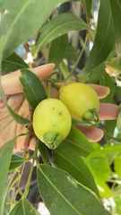

About this plant
Rose Apple is an evergreen fruit tree valued for its fragrant edible fruits, dense foliage and usefulness in gardens, farms and conservation landscapes.
- Common name
- Rose Apple
- Local name
- Zambarau (Kikuyu)
- Botanical name
- Syzygium jambos
- Family
- Myrtaceae
How the plant is used
Food
The fruits are eaten fresh and may also be processed into beverages and vinegar.
Traditional knowledge
The bark and leaves have been used in traditional preparations for diarrhoea, malaria and abdominal pain.
Health information: These are recorded traditional uses. They are not a recommendation for treating illness and do not replace professional medical care.
Other uses
The wood may be used for timber and fuel, while the tree can contribute to agroforestry, shade and environmental conservation.
Planting details
Mount Kenya University 29th Graduation Commemoration Tree. Planted on 7 August 2026 at Happy Valley Graduation Pavilion.
Flower and fruit

Identification and sources
Botanical identification: The supplied record named Syzygium guineense, but the supplied flower and fruit photographs are more consistent with Syzygium jambos (rose apple). The specimen and local name should be confirmed by an MKU botanist before final publication.
- Mount Kenya University commemorative tree record supplied for the project.
- Royal Botanic Gardens, Kew. Plants of the World Online: Syzygium jambos (L.) Alston.